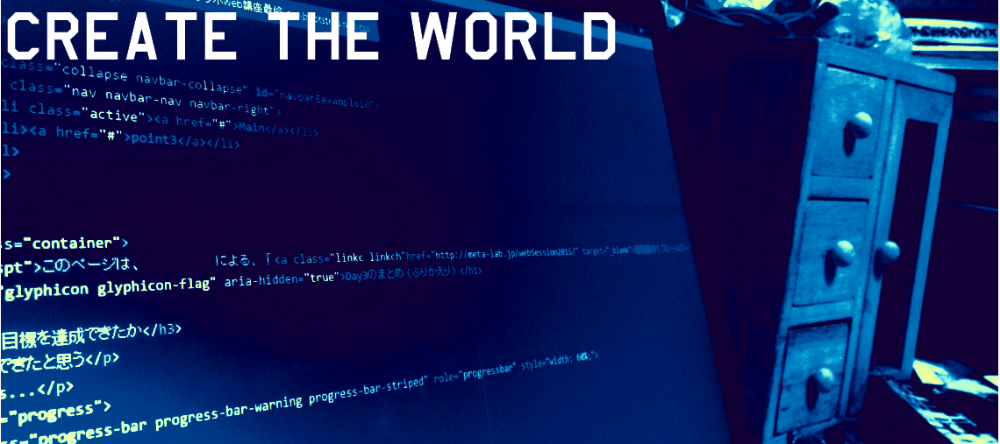

自由気ままにPCを酷使して、映像作品等を作る人。
思考回路が「なかったらなるべく自分で作る」となっており、よく無茶なことをする
いろんなところに変なこだわりのある作品を作ることが多い
最近は3Dプリンタでの創作にはまっていて１週間の大半を3Dプリンタとモデリングに費やしている
零関連のページ類
過去作品と現在進行中のプロジェクトデス。
札幌地下歩行空間 6面ディスプレイ映像作品
More Information: Sapporo-north2 award siaf 2014
Frenz 2016 映像作品提出
More Information: Frenz 2015 Official Page
NHK Eテレ 「TECHNE 映像の教室」 TechneID提出
More Information: Techne Official Page
Techne ID 001 Techne ID 002 Techne ID 003 Techne ID 004
結果 ：全滅
FabLab 3Dprinter template model making project(仮)
More Information: 大学の3Dプリンタをもっと使って欲しいのであったらいい3Dデータのサンプル制作。多分一生終わらない企画。
追記 最近fablab系企画関連でお話通りそうになってきたので全力で推してます
下に行くほど最新ﾃﾞｽ｡
| 日にち | 更新内容 |
|---|---|
| 2016/01/8 | サイトアップロード |
| 2016/01/11 | Live2Dのモデルデータ更新 モーション試験的に導入(動作してない…？) PC版サイトのLive2Dモデル枠拡大 Worksの内容ほんの少し変更 コメントシステムのバグ除去 |
| 2016/02/05 | Techne_IDを応募をしたため詳細を追加 コメント機能修正、名前かコメントが空白だと送信されないようにした ほんの少しtopの画像修正 |
| 2016/02/06 | Techne_IDを2動画アップロードに伴いリンクの追加と場所修正。progressを75% -> 85%へ 新たにプロジェクトを追加 |
| 2016/05/25 | 別サイトにブログ開設したのでリンク貼り |